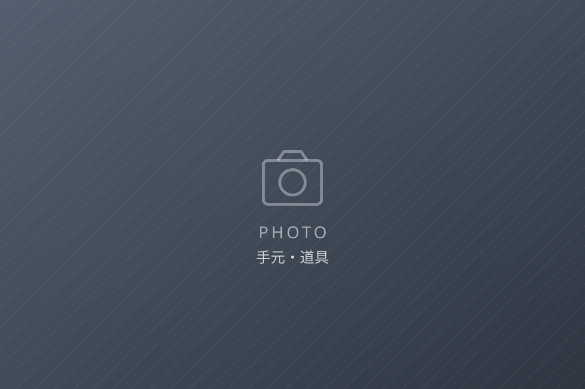
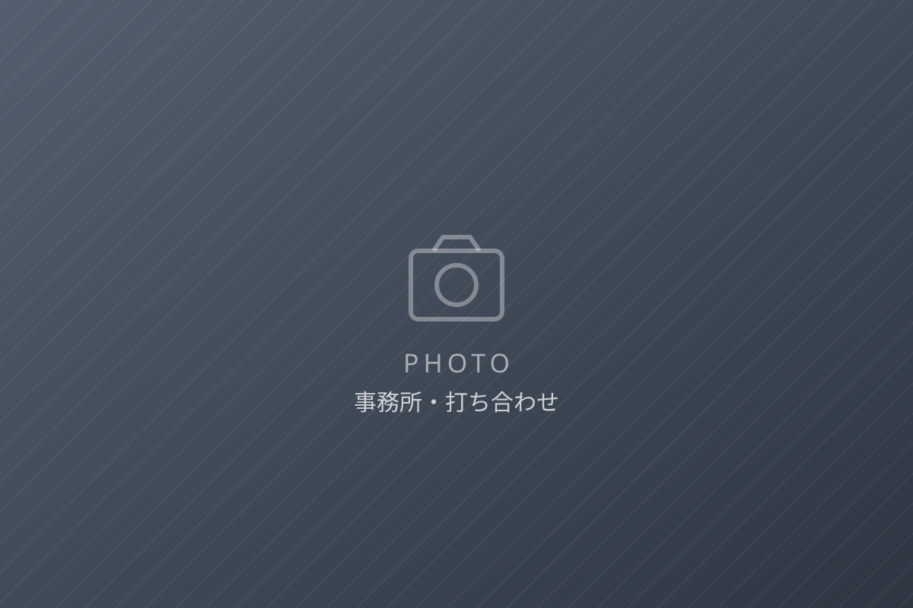
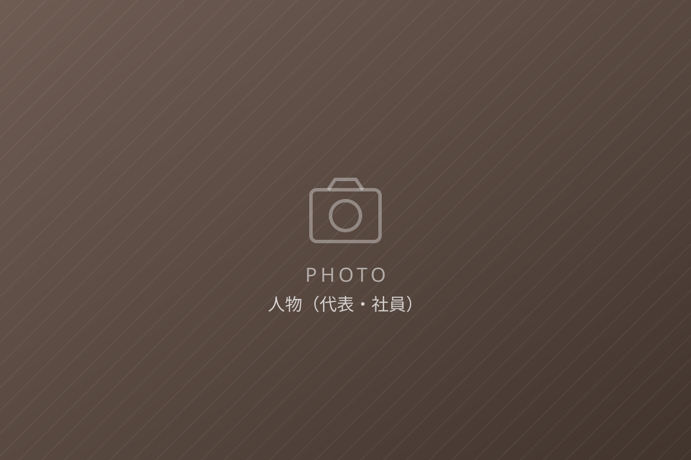
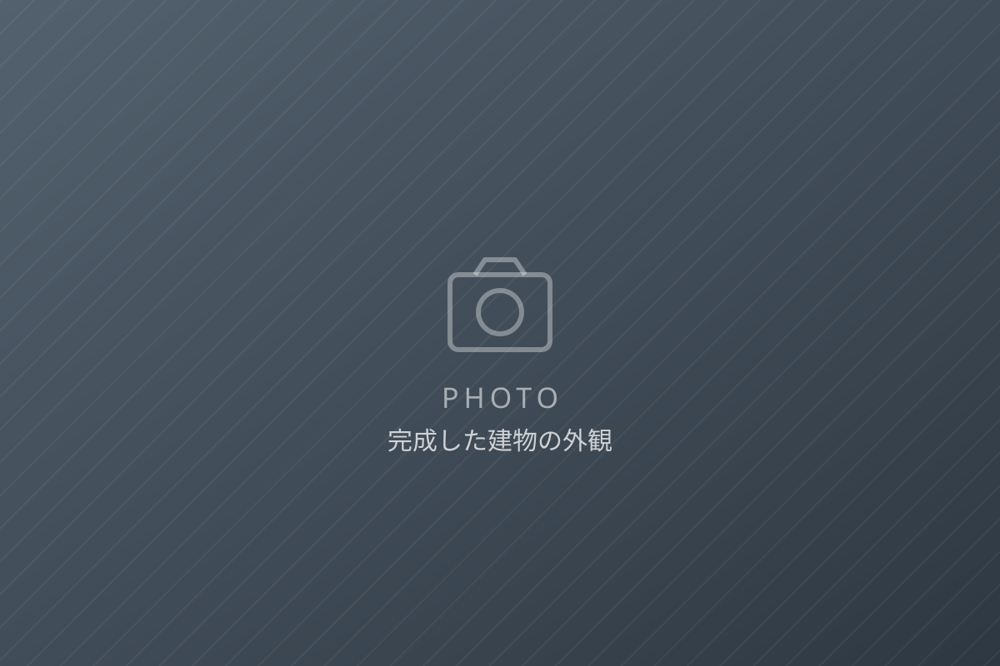
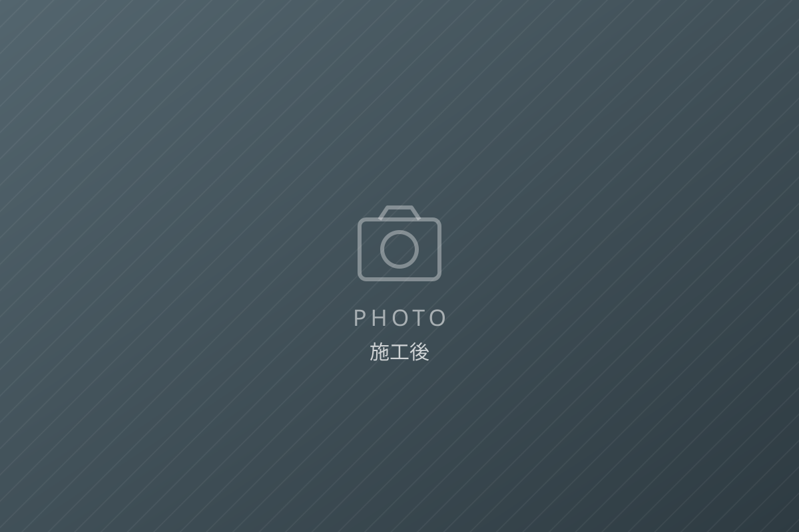

Story.01
Aさん
初めて一人で組んだのは、TOTOのユニットバス







工事を下請けに出さない会社だから、撤去から組み立て、仕上げまで、全部の工程が自分の腕になる。さいたま市西区で2001年から水まわりを手がけるリモデリングアートで、職人として一本立ちしませんか。
リモデリングアートが掲げているのは「自社施工へのこだわり」です。お客様にとって決して安くないリフォームだからこそ、工事を人まかせにせず、自社の職人が最後まで責任を持ちます。
働く側から見れば、それは一つの現場で、解体から仕上げまですべての工程にさわれるということ。施工事例には築年数も費用も、使った商品もそのまま載せています。自分の仕事に値段がついて、会社の顔になる。腕を上げたい人に向いている会社です。
マンションの浴室、キッチンの据え付け、クロスの張り替え。リモデリングアートの職人が、毎日向き合っている現場をのぞいてみてください。
ENTRYモデルルームの見学から、気軽にどうぞ
20年以上続く会社で、腰を据えて腕を磨く解体から仕上げまで、全部できる職人になれるメーカーの最新設備を、いち早く自分の手で自分の仕事が、価格つきで会社の顔になる実物を見て覚えられる、川越のモデルルーム
012345
01
2001年設立
2001年の設立から、さいたま市西区を拠点に埼玉県内の住まいを手がけてきました。建物が古くなるほど必要になる、水まわりのリフォームが仕事です。
02
Point.02
「自社施工へのこだわり」が会社の看板。工事を下請けに出さないので、撤去・組み立て・給排水・内装まで、一つの現場で一通り経験できます。
03
Point.03
TOTOリモデルクラブの会員店。最新のユニットバスやトイレのほか、クリナップのキッチンなど、扱うメーカーも幅広くあります。
04
Point.04
施工事例には「築21年・マンションの浴室・85万円」のように、築年数も費用も商品名も載せています。仕上がりに自信がなければ、できないことです。
05
2021年
2021年に川越にモデルルームを開設。商品の違いを、カタログではなく実物で覚えられます。
FOR BEGINNERS
建築の仕事をしたことがある方は大歓迎。水まわりが初めてでも、マンションの浴室・キッチンの工事で、先輩が一つずつ教えます。
ENVIRONMENT
工事を自社の職人で回す会社だから、職人が長く続けられることが、そのまま会社の力になります。
REQUIREMENTS
募集職種
リフォーム施工スタッフ（水まわり・内装）
仕事内容
マンション・一般住宅の水まわりリフォーム施工
給与
月給〇〇万円〜〇〇万円（経験・能力により考慮）
勤務地
さいたま市西区の事務所に集合 → 埼玉県内の現場
FAQ
もちろんです。川越のモデルルームや、実際の現場を見てから決めてください。
マンションの浴室・キッチン・洗面台・トイレのリフォームが中心です。戸建てや店舗の工事もあります。
慣れるまでは必ず先輩と一緒です。トイレや洗面台の交換など、小さな工事から任せていきます。
Join our team
Join our team.
Grow with us.
まずは、川越のモデルルームを
見に来ませんか。
PROPOSAL
リモデリングアート様の実際の情報・写真で制作します。施工実績の更新は「じーむれす」で写真を送るだけです。
12月末までのお申し込み・先着3社様限定
実績づくりのための特別価格です。
LINEなら、友だち追加して「レポート見ました」と送るだけでOKです。ご連絡いただいても、無理な営業はいたしません。気になる点だけのご質問も歓迎です。
デモ制作：A-SHOP／じーむれす（担当 大瀧雄真） ※このサイトはご提案用のデモで、検索エンジンには表示されません。